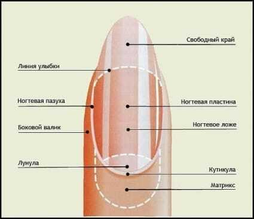

Строение ногтевого аппарата
Наш ногтевой аппарат состоит из таких составляющих, как лунка-видимая часть корня ногтя, она является самой мягкой частью, из матрикса-корня ногтя, вентрального, промежуточного и дерсального слоя. Рождается новая клетка из матрикса и двигается по ногтевому ложу, также есть линия улыбки, свободный край, точки вроста, ностевая пластина, кутикула-кожный ободок, который выполняет защитную функцию, птеригий, боковые валики и пазухи, начало роста кутикулы-синус, стрессовая зона, проксимальный валик, литеральный валик и дистальный край.
